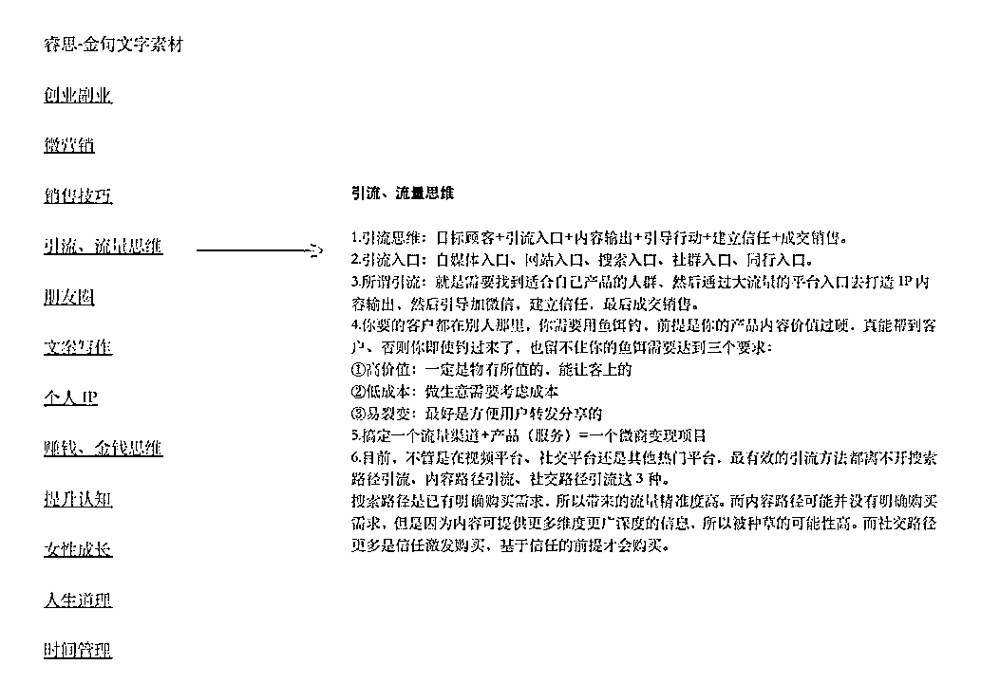

来源：https://b80fa9wrsf.feishu.cn/docx/JPRAdLgGFowUE7xargGc8YNjnzh
哈喽，大家好。
我叫李思念，是睿思学院创始人，也是一名10年的创业者。
过去从事过多个私域创业项目，目前专注为个体创业者提供IP创业综合指导。
我身上被人广为记忆的个人IP标签中，首当其冲的应该就是我的文案力。
我坚持更新朋友圈，年输出超过百万字，写的文案在创业圈被广泛传播，在小红书上也通过文案吸粉无数，变现超过7位数。
我有时候会觉得，文案，它真的是一个逆天改命的武器。
当你开始亲自原创文案时，你会发现，自己学会了在字里行间思考，自己慢慢拥有了核心思想，这种思想，通过文案的传播，吸引、影响、感染了更多同频的人。
而这种影响力，也反之加持了你的个人IP，会直接作用于你的事业成绩。
写作多时，2022年，我给我的文案风格，终于敲定了一个名字，叫做「心金文案」，寓意是既能吸金、又能深入人心的文案。
文案不同于文章，文案本身就带有一层商业变现属性，所以能够吸金才是关键，而文案又需要蕴藏感情、给人能带来触动，所以深入人心的写法，也是必要。
那么接下来就来分享下，我是如何写出既能吸金、又能深入人心的心金文案的。
当我们在选择写文案之前，先来思考三个问题：
你写文案的目的是什么？
你的文案是写给谁看？
文案发布在哪些平台？
一个个来说。
前面我提到了，文案和文章，虽然一字之差，但是大有不同。
人人都会写文章，但不是人人都会写文案。
因为文章可以是文学属性的，我们写文章，不一定要带有目的性，比如纯粹去记录日记、去编写一个故事、去写散文抒发自己的情感，你可以随意表达。
而文案，它是注定要呈现在大众面前的，而且要通过传播去实现商业目的。所以好的文案，一定要结合营销思维，加上转化属性，而不是写一堆“华丽的废话”。
所以，我们在写文案之前，需要思考两层目的。
一层是宏观的，你整体文案的方向是为了实现什么？比如我，坚持写文案是为了塑造我的个人IP，是为了吸引更多同频的学员和事业合伙人。
一层是微观的，具体到每一个单条文案要达到什么目的？比如这条文案发出去，希望让用户感受到你这个人非常靠谱、负责任，从而对你产生信任；比如是为了宣传某个活动，促进成交，触发用户立刻下单的渴望；比如你写出来用户的某个痛点，希望吸引到有同样痛点的人群……
这也是一个写文案不跑题的方法，先明确一条文案的表达主旨，然后围绕着这一个主旨来写。
一条文案，一个主旨就足够了。太多了，就会让人眼花缭乱，反而无法抓住重点。
写文案除了想明白目的，还要想明白你写给谁看。
很多做私域的朋友，为什么发了无数朋友圈但是咨询寥寥无几？大概率是因为他陷入了一种自嗨式写文案的状态。他沉浸在自己的世界里，按照自己的局限性想法去发文案，他以为用户会想看的内容，其实用户并不一定想看。
所以，我们在写文案之前，也需要想明白你的受众是谁、他们都是什么样的人群？有什么样的特点？他们兴趣爱好是什么？他们的价值观是怎样的？他们目前需要解决的问题是什么？他们犹豫纠结的点在哪里？你拿什么样的东西能吸引到他们？
——你要先去理解用户，然后才能写好文案甚至于做好营销。
不同平台的文案写作方式，也会有所不同。
比如像抖音的文案需要开头制造悬疑感和爆点吸引人；知乎的文案需要具备干货属性，且长文居多，要有一定的输出能力；小红书的受众是女性居多，要在文案中加上情绪价值；像我的文案，通常是发布在私域朋友圈里，朋友圈的文案则是要求直接精准、切入痛点，但又不能全部是硬文案，也要有融合个人IP的软文案。
这里有一个技巧是：同一条文案，适当根据平台特性去修改，就可以实现多平台分发，真正让一条文案实现成倍放大影响力的效果。
文案的写作，也是需要术道结合的。
道，是文案底层的思维逻辑。
我曾经说过，文案是思维的显化。写作的过程其实就是把你的思考你的价值观传递出来，那么我们只要去写文案，一定其中就会包含着我们态度的表达，你的每一次起心动念，都会影响着你文字的风格与走向。
写作也是一个看待事物思考的过程，思考的清晰，才能写的清晰，好的文案往往是源自于深度思考的，所以我们要提升自己的思考能力以及思考深度。
那么这里我教给大家几个办法提升思维能力：
第一种，遇到任何事情多问自己三个“为什么”？
为什么是这样？为什么会发生这件事情？为什么我要去做这件事情？
这个其实就是挖掘内心深处的想法，也是倒逼自己思考，做出独立的判断。
第二种，叫做A纸头脑风暴方法，这个是来自于《零秒思考》这本书，就是用1分钟时间在A4纸上写下你的想法。
将一张 A4 纸横放在面前，每张纸写一个主题，1 页写 4～6 行，每行 20～30 字，写每张纸所用的时间要控制在 1 分钟以内。每天去写十张纸，也就是花十分钟的时间。可以写的内容很多，比如说你怎么看待一个事物一个问题，比如梳理做某件事的思路，但是一定要强迫自己在一分钟之内写完，这个方法虽然简单，但如果长期训练可以轻松提高深度思考的能力。
第三种，学会多角度思维。
其实很多时候我们的困顿是源于局限的。只要改变角度，一切都会随之而变。太专注于事物本身，我们只会局限在事物的某一方面，盯着一个固定的画面，时间长了人会变得麻木，甚至会陷入思维的死角，一直在角落打转，找不到出路。
情感、工作、人生、写文案，都是这个样子。所以要打破困局，不妨换个角度重新出发。
阻碍我们的不是往往事物，而是我们看事物的角度。
而文案的术，则是写文案的方法技巧，比如说写作方法是属于术的，文案风格是属于术的，哪种话能更让人产生信任感也是属于术的。
接下来就来讲讲文案的术，写作方法论。
术的第一点，是文案风格。
其实无论是文章还是文案，你读的多了都能判断出来这是哪种风格、是谁的杰作。
比如咱们看中国古典文学，婉约和豪放两大派系，李清照的诗词就是属于婉约派，“寻寻觅觅冷冷清清”，文字就是非常的细腻委婉，仿佛我们都能感受到置身于闺房的场景；而辛弃疾的“醉里挑灯看剑，梦回吹角连营，八百里分麾下炙，五十弦翻塞外声”就是豪放派，让我们仿佛身临战场。
如果说你的文案能够让别人在阅读的时候，感叹出来这一定是谁写的文案，那其实就证明你成功了，你已经形成了自己的风格给自己的文字打上了标签化。文字的差异化就是你树立形象的一种方式，因为价值独特所以更受欢迎。比如很多朋友会跑来跟我说，谁谁谁的小红书是模仿你的，这就是我的文案风格形成的优势，特点分明。
很多人写文案，是没有一个统一风格的，今天俏皮可爱，明天又是犀利毒舌，后天又成了沉稳温柔——这样反而不利于形成记忆点。
所以一定要想明白，自己要形成哪种文案风格，统一、协调，才能持续吸粉。
其实人每天都会有很多灵感出现，比如你看到一篇文章，瞬间有了自己的感悟与想法，那么就可以把这些都用文字的形式去记录下来，这就是你原创的素材积累。可能你的想法并不是长篇大论，只是一句话，也可以记录下来的，未来你再回看自己的记录，可能又会有新的感悟。
在我自己的备忘录里，就有一个「闪光文件夹」，这里面都是我平时突然迸发出来的灵感记录，我朋友圈很多文案也不是在发表的那一刻才想出来的，而是在我的备忘录里已经积累了很久的。所以你们看我朋友圈每天会有各种思路，这就是源于积累的力量。
当你发现好的文案的时候，可以通过复写的方式去锻炼自己的写作能力。这个最早是富兰克林提出的写作法，他在自己的自传当中写到自己的写作能力就是这么提升的。
什么叫做复写？就是你先看一遍文案，然后把它关闭，尝试用自己的话去再次写出来，然后你会发现，每一次你写出来的内容都不一样，然后你去跟原文案对比，去发现自己表达不清晰的地方在哪里，那就是你写作的薄弱点，未来持续重点强化练习这个方面。
然后当大家写出来一个文案的时候，不要孤芳自赏，可以去找一些朋友或者专业人士帮助你点评你的文案，提出建议，这对你的文案优化和写作能力的提升是有很大的帮助的。
不同的人是站在不同的角度去看的，建议也能让你的文案得到优化。
不知道大家有没有那种“看到一句文案，就觉得对方似乎很懂我，知道我的心酸，明白我的情绪，了解我的感受”的。看到这种文案，就会对写这句文案的人充满好感。这个其实就是因为文案而引发的共鸣，那么这种共鸣要如何去写出来呢？
这种共鸣，是需要通过「构建相似」来进行的。
可以在文案中代入生活场景感受，贴近现实，你所感受到的喜怒哀乐，用户也能同样感受到。很多让人感觉到强烈共鸣感的文案、电影、小说等，都是通过“相似情境”来唤起了用户那个记忆中的情境，就比如看青春片电影，你也会回到那种青春岁月，想起自己曾经的年少感情，产生了共鸣，其实就是这个道理。
分享给大家3个方向：经历的共鸣，感受的共鸣，价值观的共鸣。
世间万物其实都遵循着吸引力法则，低能量会被高能量吸引，那你就必须要先把自己的势能打造起来，勇敢的在文案里去表达你的心声，才会引发别人的共鸣。
文案写作的方法论还有很多，具体到不同类型的文案写法，比如产品类文案、故事类文案、观点类文案等等，这里先给大家讲一些通识性的，也是写文案的基础术，如果你们对哪类文案具体感兴趣，可以告诉我，下次再具体详细分享写作术。
对于文案来说，尝试写一写并不难，难的是能够真正坚持输出。
有时候，我们可能都不知道要写什么，想写又头脑空白，对不对？
所以接下来，思念讲一讲，该如何培养文案持续输出的能力。
在《红楼梦》里，黛玉教香菱学作诗，她是这么说的：“你若真心要学，我这里有《王摩诘全集》，你且把他的五言律读一百首，细心揣摩透熟了，然后再读一二百首老杜的七言律，次再李青莲的七言绝句读一二百首。肚子里先有了这三个人作了底子，然后再把陶渊明、应玚，谢、阮、庾、鲍等人的一看。你又是一个极聪敏伶俐的人，不用一年的工夫，不愁不是诗翁了！”
黛玉说的是一年，在我看来一年算长了，真正高质量的输入，只需3个月，你的思维水平就会得到大幅度的提升。
千万不要自己闷头苦想，因为你的认知基础薄弱，你想半天想出来的很可能归因逻辑就是错的。
一个人凭自己的想象是无法做起完整的现代思维架构的。现在流传的精华思想，都是建立在历史前人一代代积累的思维基础之上的，从古希腊从孔孟时代开始，文学哲学逐渐发展，思想得以流传，而后世通过阅读前世的文章，产生了新的想法，才不断丰富演变至今。
思维是一定要通过不断输入才能得到提升的，踩着巨人的肩膀，你会看到更广阔的天空。
输入完了之后，还要思考。因为从明白到掌握，有一个「内化」的过程。
为什么会有“明白很多道理，但是过不好这一生”，其实是他根本不明白，他只是看到了某个道理，浅浅的记住了这句话，但是却没有真正内化成为自己的认知。
——这是一种很悲哀的状态，你以为你都知道了，但其实你并不知道。要是心态不好的人，还在感慨自己怀才不遇，那就会更可悲了。
建议大家看三类，可以先从【故事类】的内容看起，然后去看一些【评论类】的内容，最后再去看一些【商业类】的内容。
【故事类】是最适合新人去看的，因为这类看起来也会相对轻松易读，不至于晦涩难懂。
看故事类的内容是看表达方式，是看语句的通畅，连贯的表达，是把一件事情说明白的能力。因为你未来要写出来的文案，并不见得必须文采飞扬，但是你一定要让别人能看懂你在说什么，所以文案的通畅是非常重要的。看得多了，你自然就会产生一种语感。
接着看【评论类】的内容，比如书评，影评等等，这类是去看逻辑的。
优秀的营销文案，不仅不会让你产生对推销产品的反感，还会让你跟着它的思路走，让你觉得你自己确实需要这个产品。而这一切的背后，是严密的逻辑，是一环扣着一环的，文案的每个部分都是连起来的，字里行间是布满逻辑的钩子，勾着你继续读下去，然后让你产生共鸣。
所以，我们去看一些评论类的内容，这种文案的逻辑性是我们需要强化的。
最后再看【商业类】的内容，这类内容是看观点和文案套路。
观点就是看一篇文案它表达的是什么观点，观点看多了，你的认知水平也就提升了，提升了认知水平，你的文案力就会增强。
再回归到我们营销类写作的本身，我们文案要产生的效果是让对方产生购买的冲动，产生与你合作的欲望，所以我们要去多看商业类的文案，分析它的文案框架结构，如何引入产品，如何激起对方的兴趣。
这里我建议大家可以建立一个属于自己的「文案素材库」，因为在这个快节奏的时代，只看一遍的内容可能转眼就忘，而拥有一个专属自己的素材库，全部都是高价值的精华内容，会更有利于自我的精进。
在平时的阅读学习中，积累到好的词句、观点、文章都收集起来，方便反复翻阅，持续吸收。
做素材库的时候，可以进行分门别类的整理，因为如果不同的话题都掺杂在一起，未来我们想找的时候也会比较麻烦，所以在日常积累时就提前做好分类，会更高效。
素材库的建立并不复杂，可以看一下我做的金句素材库：

因为我也不是什么技术高手，遵循方便原则，我用的就是最简单的word文档，然后把每个栏目都设置一个超链接，直接链接到对应的位置上，这样便于回顾素材的时候及时跳转。（有些内容手机看的也会放在备忘录里，系统自带备忘录yyds，记得也要分别建立文件夹哦）
比如这里的「引流、流量思维」栏目下，我点击跳转出来的就是收集的干货（这些都是很早期整理的，我的营销思维也是这样一点点学习提升的）。
这样把一类知识去归类，会更有利于我们在做输出的时候快速获取灵感，有时候可能就是一句话，就能带来思路，迸发出源源不断的写作源泉。
最后，最关键的一点是，大量练习。只想不练，肯定也是不行的。只有真正的落地练习，才能让你的文案提升。
如果不知道该写什么文案，思念这里有一个方法：
去把你行业里最常见的100个问题整理出来，能自己回答的自己尝试回答，不能自己回答的去各种书籍、行业大神那里求教获得答案，理解之后再用自己的话写出来。
一定是用自己的话写出来，不是去照搬或者模仿别人的语言，那样你还是没有思考、没有自己文风的。
我见过有人模仿我的文案，是把我的课程产品名换成了她的，把我晒我学员换成她晒她代理——这种就是根本没掌握文案写法，自以为很聪明，但实际上束缚了自己的文案力和创造力，她只会在我的文案框架里去改写，却从未思考我文案中的吸引点和逻辑性。
所以大家写作记住，千万不要硬性模仿，更不要去套什么所谓的模版，那只会局限你的思维。
大家可以试一试，当写完这100个问题的回答之后，不仅你的专业认知体系完整建立了，文字输出能力也提升了。
学会写文案，是真的有逆天改命的效果的。
你对文字掌控力越强，对信息也会越敏感，也更容易捕捉到有价值的信息，而这些信息的摄入会让你的思维层次快速提升，脱颖而出。
不断输入，高频思考，适当技巧，大量练习。——这就是写好文案乃至提升思维能力的秘诀。
分享到此就结束啦，如果有任何问题欢迎咨询思念，祝大家都能写出既能吸金、又能深入人心的文案！
欢迎大家链接思念🔗添加即赠送《心金文案》文案集一份！